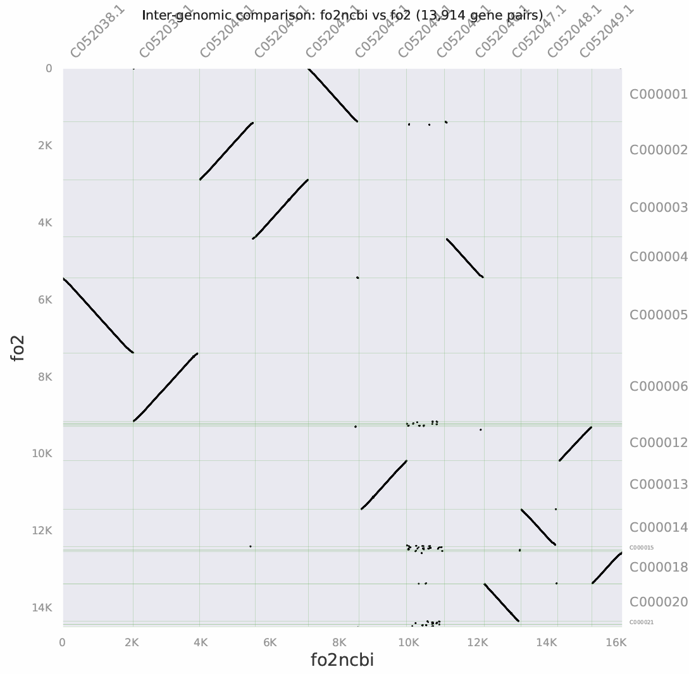

前言
染色体共线性分析就是看两个染色体之间哪里像哪里不像，将像的地方用线条标记出来。本文章已经建立傻瓜脚本，请浏览文末。
数据
既然要做共线性分析，我们肯定至少要有两个基因组序列的 .fasta 文件，除此之外，我们还需要它们的基因组注释文件和蛋白组文件，为了分析严谨性，我们会取最长的转录本作为蛋白组序列。
如果你目前只有 .fasta 文件，我们需要经过以下流程进行文件处理准备。
.gtf 基因组注释文件
关于注释文件，这一篇文章详细介绍：
.faa 最长蛋白组文件
关于最长蛋白组文件的提取，我们可以使用 gffread 工具结合上一步的注释文件得到蛋白文件：
注意选择最长转录本模式。
对于数据库或其它地方来的蛋白组文件，我们可以拿下面这个脚本再进行一遍最长转录本过滤：
请务必打开.faa和.gff检查一下！.faa里的条目 ID（如 >Sb01g001010），必须能在.gff文件的第三列为 mRNA（或 transcript/CDS）那行的 ID= 属性中完全对应找到。如果对不上，后续分析软件会找不到位置。
比对
接下来，我们将进入核心的比对与共线性搜索阶段。目前学术界最常用的工具有两个：MCScanX（经典老牌）和 JCVI（Python版，可视化极美）。无论你用哪一个，接下来的核心核心步骤只有两步：制作基因位置文件 和 全对全蛋白比对（Diamond）。我们下面以 JCVI 为例进行说明。
统一文件命名
共线性软件需要通过文件名来识别物种。请在你的工作目录下，将两个物种的文件重命名为统一的前缀。假设你的物种 A 叫 Sbi（比如高粱），物种 B 叫 Osa（比如水稻）：
- 物种 A： Sbi.faa 和 Sbi.gff
- 物种 B： Osa.faa 和 Osa.gff
这一步非常非常非非常非常重要，你再后续分析遇到的大部分的报错基本上都是由于名称对不上造成的。另外，如果你使用 Liftoff 做的转移注释，则会遇到流程跑通但没结果，这是因为 JCVI 发生了内存冲突导致错误过滤。基于此，我们的脚本和文件命名需要慎重！当然，也推荐你最后的的傻瓜脚本！
生成简化位置文件（以 JCVI 为例）
JCVI 需要的是 .bed 格式。你可以直接用 JCVI 自带的工具从你的 GFF 转换。
这里先备份一下 jcvi 安装的 conda 环境配置。
conda create -n jcvi_env python=3.9 -y
conda activate jcvi_env
conda install -c conda-forge -c bioconda jcvi -y
# 如果你嫌 conda 太慢，你也可以直接用 pip 安装：
pip install jcvi
我们直接运行交互式脚本：
生成后的 .bed 文件非常小，因为它只有四个字段：染色体、起始位置、结束位置和基因名：
chr1 1000 2000 gene1
chr1 3000 4000 gene2
chr2 1500 2500 gene3
全基因组蛋白序列双向比对（Diamond）
我们要找到物种 A 和物种 B 之间所有的同源基因对。使用 Diamond 比传统的 BLASTP 快上百倍。
Diamond 运行的核心逻辑是，建立一个参考数据库，然后再拿其它数据进行比对，我们这里以 A 物种作为建库物种。
运行后会生成两类文件 .blast 和 .dmnd。其中 .dmnd 是预建的数据库文件，.blast 是比对结果文件。.blast 它本质上就是一个 .tsv 文件。
运行共线性搜索
我们需要检查一下文件是否齐全：
- 物种 A 的蛋白文件： Sbi.faa
- 物种 A 的位置文件： Sbi.bed
- 物种 B 的蛋白文件： Osa.faa
- 物种 B 的位置文件： Osa.bed
- 全对全比对结果： diamond_output.blast
如果以上文件都准备好了，我们就可以运行共线性搜索了。JCVI 的共线性搜索脚本如下：
运行后会生成一个 .anchors 文件，这个文件就是共线性分析的核心结果文件了。它里面记录了所有被判定为共线性基因对的信息，包括它们在染色体上的位置、比对得分等。同时，还会生成一个 .pdf 文件，用于可视化共线性结果：

我们的 .anchors 有两个，其中 .lifted.anchors 信息更全面，比如：基因 A 和基因 C 已经铁证如山是共线的了，而它们中间夹着一个基因 B。虽然基因 B 的 BLAST 得分没达到核心锚点的要求，但由于它的左邻右舍都在共线性区块里，在生物学上它大概率也是在这个位置共线的。于是，JCVI 运用空间上下文推断，把这些“漏网之鱼”重新提升（Lift）并补充进来，得到我们的 .lifted.anchors 文件。
傻瓜脚本
在你正确配置环境后，傻瓜脚本只需要你提供物种的基因组 .fasta 文件和注释 .gtf 等文件即可自动完成共线性分析。
在其中，不同分析样本不能同名。在多个分析样本分析时，你需要指定一个中心样本进行建库，以此作为参考基准。如果你只有两个分析样本，那么你可以任选一个作为中心样本进行建库。
运行示例：
============================================================
👑 全基因组共线性分析终极自动化管线
(One-Click Synteny Master Pipeline)
============================================================
🌟 步骤一：配置【参考物种】(Reference)
📂 扫描到以下 2 个 参考物种基因组序列 (.fasta/.fna):
[1] Hifiasm_genome/fo2.fasta
[2] GCA_013085055.1_ASM1308505v1_genome/fo2ncbi.fna
👉 请选择 参考物种基因组序列 (.fasta/.fna) 编号 (q退出): 2
📂 扫描到以下 2 个 参考物种注释文件 (.gff/.gff3):
[1] GCA_013085055.1_ASM1308505v1_genome/fo2ncbi.gff
[2] Hifiasm_genome/fo2.gff3
👉 请选择 参考物种注释文件 (.gff/.gff3) 编号 (q退出): 1
👉 请输入参考物种前缀代号 (例如 fo2ncbi): fo2ncbi
🌟 步骤二：配置【待比较物种】(Query)
--- 正在添加第 1 个查询物种 ---
📂 扫描到以下 1 个 待比较物种基因组序列:
[1] Hifiasm_genome/fo2.fasta
👉 请选择 待比较物种基因组序列 编号 (q退出): 1
📂 扫描到以下 1 个 待比较物种注释文件:
[1] Hifiasm_genome/fo2.gff3
👉 请选择 待比较物种注释文件 编号 (q退出): 1
👉 请输入该物种前缀代号: fo2
[?] 是否继续添加下一个待比较物种？(y/n): n
⚡ 请设置并发线程数 (当前系统 192 核，默认使用 153):
📁 成功创建独立主控工作区: Master_Synteny_Workspace_20260516_184030
==================================================
🛠️ 阶段 A：数据标准化预处理 (蛋白提取与 BED 格式化)
==================================================
⚙️ [fo2ncbi] 正在提取全基因组蛋白序列...
⚙️ [fo2ncbi] 正在筛选最长转录本并注入物种前缀 'fo2ncbi_'...
✅ [fo2ncbi] 蛋白提取完成！代表转录本数量: 16202
⚙️ [fo2ncbi] 正在生成简化基因位置文件 (BED)...
[05/16/26 18:41:54] DEBUG Load file `/home/thz/SAF/4_assemble/fo2/GCA_013085055.1_ASM1308505v1_genome/fo2ncbi.gff` base.py:39
[05/16/26 18:42:00] DEBUG Extracted 16202 features (type=mRNA id=ID parent=Parent) gff.py:3128
✅ [fo2ncbi] BED 文件生成完毕，前缀注入成功！
⚙️ [fo2] 正在提取全基因组蛋白序列...
⚙️ [fo2] 正在筛选最长转录本并注入物种前缀 'fo2_'...
✅ [fo2] 蛋白提取完成！代表转录本数量: 14511
⚙️ [fo2] 正在生成简化基因位置文件 (BED)...
[05/16/26 18:42:02] DEBUG Load file `/home/thz/SAF/4_assemble/fo2/Hifiasm_genome/fo2.gff3` base.py:39
[05/16/26 18:42:08] DEBUG Extracted 14520 features (type=mRNA id=ID parent=Parent) gff.py:3128
✅ [fo2] BED 文件生成完毕，前缀注入成功！
==================================================
⚔️ 阶段 B：全基因组比对与共线性搜寻
==================================================
==================================================
🚀 开始分析核心对: [fo2ncbi] ⚔️ [fo2]
==================================================
▶️ 正在构建 Diamond 数据库...
......
Database sequences 14510
Database letters 7058849
Database hash 0998daf01d19b80efac990ef62069476
Total time 0.107000s
▶️ 正在运行全对全双向比对 (Diamond BLASTP)...
▶️ 正在合并比对结果并封装...
🧠 正在调用 JCVI MCscan 核心算法寻找 Anchors...
......
[05/16/2026 06:42:19 PM] DEBUG Figure saved to `fo2ncbi.fo2.pdf` (810px x 810px) base.py:347
🎉 成功！[fo2ncbi] 与 [fo2] 的共线性区块识别完毕！
🏆🏆🏆🏆🏆🏆🏆🏆🏆🏆🏆🏆🏆🏆🏆🏆🏆🏆🏆🏆
全自动化管线运行圆满结束！
⏱️ 总耗时: 0.46 分钟
📂 所有结果都已安全存放在:
Master_Synteny_Workspace_20260516_184152/
💡 接下来，你只需进入该文件夹，直接执行绘图命令：
python -m jcvi.graphics.dotplot fo2ncbi.fo2.anchors
🏆🏆🏆🏆🏆🏆🏆🏆🏆🏆🏆🏆🏆🏆🏆🏆🏆🏆🏆🏆
丝带图绘制及复杂共线图绘制
画图是门学问，我们单独开一篇博客讲一下丝带共线图。
原理逻辑浅析
我们先来考虑最简单的情况：两个样本之间的共线性分析：我们分析的本质就是将两个样本之间的相同的部分用线连接起来，但是我们不会直接连接所有的核苷酸序列，因为那样没有意义。因此，我们分析的核心单位是基因，如果两个基因之间长得比较像（这个“像”的阈值由你觉得），则这两个基因就被认为是同源的。
实际分析中，我们不会直接去比对两个基因的核苷酸序列，我们实际比较的是它们的氨基酸序列或功能域，这样更有生物学意义，且每一个最长蛋白都对应着唯一一个基因。
一个基因在分析过程中由这样一个参数需要注意：它们所在的染色体代号，这也就是我们生成 .bed 文件时所做的事情。
chr1 1000 2000 gene1
chr1 3000 4000 gene2
chr2 1500 2500 gene3
接着我们就会比较两个样本之间的蛋白相似性，这是一个挺吃算力的步骤，因为我们要对两个物种所有的蛋白进行两两比对，这也就是我们生成 .blast 文件的过程。注意，我们最终文件是经过过滤后的（Diamond 参数里的 --max-target-seqs 5 就是只留下最像的 5 个），如果不过滤，假设两个样本都有 300 个基因，那么我们最终就有 90000 行比对结果。
最后一步，我们会结合之前的两类文件，进行共线性搜索，生成共线块记录文件。
如果一条染色体上没有任何基因信息记录，在生成 .bed 文件中就会把它丢弃！最终 300 条可能只有 200 条染色体在最终共线图中呈现！而在最后画丝带共线图时，如果一个染色体上有基因但不是最优共线选择，它会出现，但没有丝带和它相连。